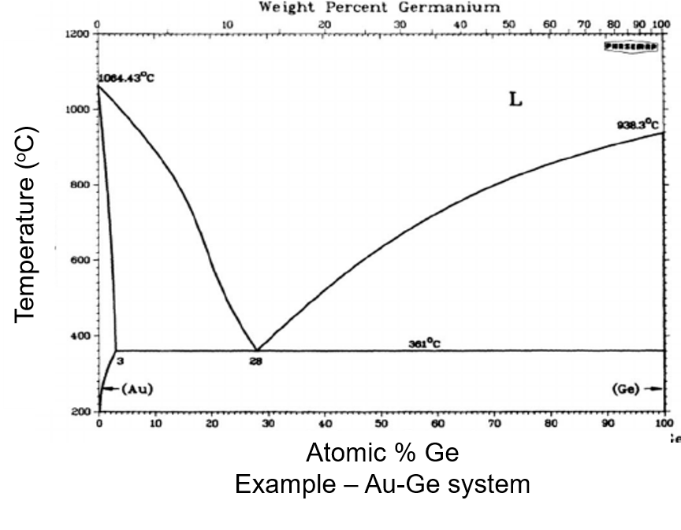
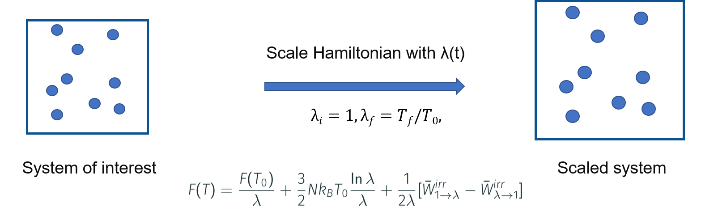

Calculation of phase diagrams #
References#
In this notebook, we will use the interatomic potentials for calculation of thermodynamic properties such as Helmholtz and Gibbs free energies, which in turn can be used for the calculation of phase diagrams. We will discuss calphy, the tool for automated calculation of free energies, and the methology involved. Furthermore, we will also discuss Landau which can be used to arrive at phase diagrams from free energies.
A simple phase diagram #

Phase diagrams provide a wealth of information such as: coexisting lines, melting temperature, phase stability, nucleation mechanism.
Calculation of phase diagrams: the essential ingredients #

Phase diagrams can be evaluated from free energy diagrams. The required input are:
\(G(P, T)\) for unary systems
\(G(x, T)\) for binary systems
To calculate this, we employ thermodynamic integration, in conjuction with a number of methodological improvements.
Theory behind free energy calculation
Please see the end of this notebook, or this publication for a longer discussion on the theory and algorithms.Due to our limited time, we will show the calculation of melting temperature, the end point on the phase diagram. We leverage a software tool for calculation of free energies, calphy along with pyiron for efficient and automated free energy calculations. For a detailed tutorial, see here.
Theory behind free energy calculation#
Calculation of free energies: Thermodynamic integration #

free energy of reference system are known: Einstein crystal, Uhlenbeck-Ford model
the two systems are coupled by $\( H(\lambda) = \lambda H_f + (1-\lambda)\lambda H_i \)$
Run calculations for each \(\lambda\) and integrate $\( G_f = G_i + \int_{\lambda=0}^1 d\lambda \bigg \langle \frac{\partial H(\lambda)}{\partial \lambda } \bigg \rangle \)$
To calculate \(F\),
for each phase
for each pressure
for each temperature
for each \(\lambda\)
If we choose 100 different \(\lambda\) values; 100 calculations are needed for each temperature and pressure!
Dimensionality: (phase, \(P\), \(T\), \(\lambda\))
Speeding things up: Non-equilibrium calculations #
Non-Equilibrium Hamiltonian Interpolation#

In this method:
Discrete \(\lambda\) parameter is replaced by a time dependent \(\lambda(t)\)
Instead of running calculations at each \(\lambda\), run a single, short, non-equilibrium calculation
As discussed:
the coupling parameter \(\lambda\) earlier is replaced by a time dependent parameter
The equation also no longer has an ensemble average
These aspects makes it quite easy and fast to estimate this integral.
However:
this equation holds when the switching betwen the system of interest and reference system is carried out infinitely slowly
Practically, this is not not possible.
Therefore we can write:
\(E_d\) is the energy dissipation
\(E_d \to 0\) when \(t_f-t_i \to \infty\)
So far, so good, but how is this useful?
Instead of a single transformation from system of interest to reference, we switch back too
These are called forward \((i \to f)\) and backward \((f \to i)\) switching
\(t_f - t_i = t_{sw}\) is the switching time in each direction
If \(t_{sw}\) is long enough, \(E_d^{i \to f} = E_d^{f \to i}\)
and \(\Delta G = \frac{1}{2} (W_s^{i \to f} - W_s^{f \to i})\)
Now, we have all the components required for actual calculations.
We have also managed to successfully reduce the dimensionality
for each phase
for each pressure
for each temperature
~~for each \(\lambda\)~~
Dimensionality: (phase, \(P\), \(T\))
So, how do we calculate the free energy of a system modelled with a given interatomic potential?
Free energy for solids #
Task: Find free energy of Al in FCC lattice at 500 K and 0 pressure#
Create an Al FCC lattice
Choose an interatomic potential
Run MD calculations at 500 K and 0 pressure to equilibrate the system
Introduce the reference system
Switch….
…..
Steps 1-3 should be fairly easy, we saw this in the last days and also in the first session. But how do we introduce a reference system?
A reference system is simply one for which the free energy is analytically known (\(G_i\))
We calculate the free energy difference between this and the system of interest.
In case of solids, a good choice of a reference system is the Einstein crystal. An Einstein crystal is a set of independent harmonic oscillators attached to the lattice positions.
The free energy of the Einstein crystal is:
We need to calculate:
\(\omega\)
A common way is $\( \frac{1}{2} k_i \langle (\Delta \pmb{r}_i)^2 \rangle = \frac{3}{2} k_\mathrm{B} T \)$
\(\langle (\Delta \pmb{r}_i)^2 \rangle\) is the mean squared displacement.
Now that we know about the reference system, let’s update our pseudo workflow:
Create an Al fcc lattice
Choose an interatomic potential
Run MD calculations at 500 K and 0 pressure to equilibrate the system
Calculate the mean squared displacement, therefore spring constants
Switch system of interest to reference system
Equilibrate the system
Switch back to system of interest
Find the work done
Add to the free energy of the Einstein crystal
As you can see, there are a number of steps that need to be done. This is where calphy and pyiron come in. These tools automatise all of the above steps and makes it easy to perform these calculations.
Free energy as function of temperature #

Gibb’s free energy via reversible scaling at a constant pressure is given by,
\( G(N,P,T_f) = G(N,P,T_i) + \dfrac{3}{3}Nk_BT_f\ln{\dfrac{T_f}{T_i}} + \dfrac{T_f}{T_i}\Delta G \),
Therefore, \(G(N,P,T_f)\) can be computed from \(G(N,P,T_i)\) via the free energy difference \(\Delta G\).
Here, \(\Delta G = \dfrac{1}{2}[W_{if}-W_{fi}\)] — (2)
The reversible work is related to the internal energy \(U\) by, \(W = \int_{1}^{\lambda_f}<U> \,d\lambda\) — (3)
Using MD \(W\) can be computed as:
equilibrate for time \(t_{eq}\) in NPT ensemble
switch \(\lambda\) : \(1->\dfrac{T_f}{T_i}\) over time \(t_{sw}\)
calculate work \(W_{if}\) from (3)
equilibrate for time \(t_{eq}\) in NPT ensemble
switch \(\lambda\) : \(\dfrac{T_f}{T_i}->1\) over time \(t_{sw}\)
calculate work \(W_{fi}\) from (3).
Free energy for liquids #
How is the liquid prepared in this calculation?
Start from the given structure
This structure is heated until it melts.
Melting of the structure is automatically detected by calphy
Once melted, it is equilibrated to the required temperature and pressure.
What about the reference system for liquid?
The reference system for the Liquid structure is also different. In this case, the Uhlenbeck-Ford system is used as the reference system for liquid.
The Uhlenbeck-Ford model is described by,
where,
\(\epsilon\) and \(\sigma\) are energy and length scales, respectively.
It is purely repulsive liquid model which does not undergo any phase transformations.
Comparison of melting temperature methods #

Further reading #
Software used in this notebook #